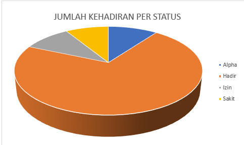
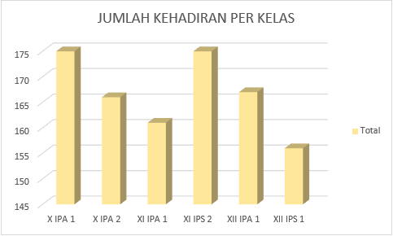
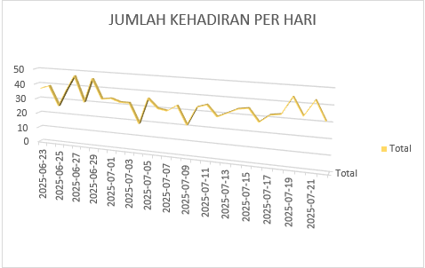
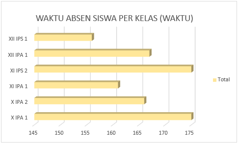
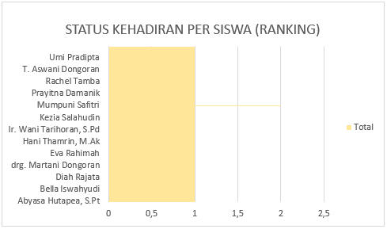

Monitoring Kehadiran Siswa SMA
Data Kehadiran Berbasis MongoDB
Kelas:
Semua
X IPA 1
X IPA 2
XII IPA 1
Status:
Semua
Hadir
Sakit
Izin
NIS
Nama
Kelas
Tanggal
Status
Waktu Absen
Keterangan
Jumlah Kehadiran per Status

Jumlah Kehadiran per Kelas

Jumlah Kehadiran per Hadir

Waktu Absen Siswa Per Kelas (Waktu)

Status Kehadiran Per Siswa (Ranking)
